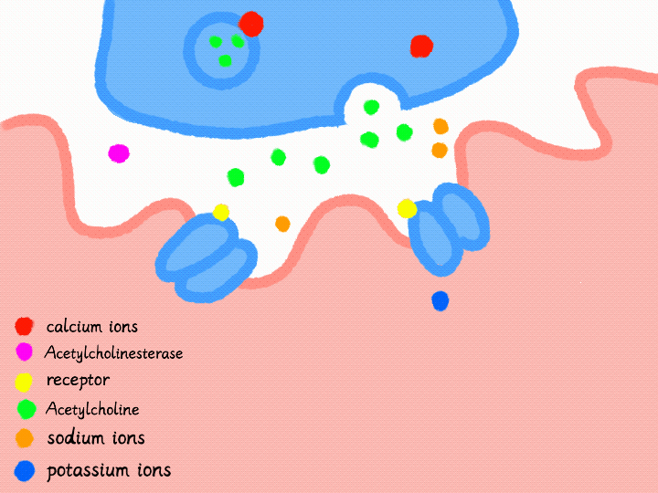

ACh has crossed the synaptic cleft and reached the motor end plate, a specialized region of the muscle fibre's sarcolemma. Normally, ACh binds to receptors on the chemical-regulated ion channels. When these channels open, sodium ions move into the muscle fibre (sodium influx), while potassium ions can move out (potassium efflux).
